20 Essential Coding Interview Patterns (FAANG)
Deep dive into recurring algorithmic strategies for technical interviews.
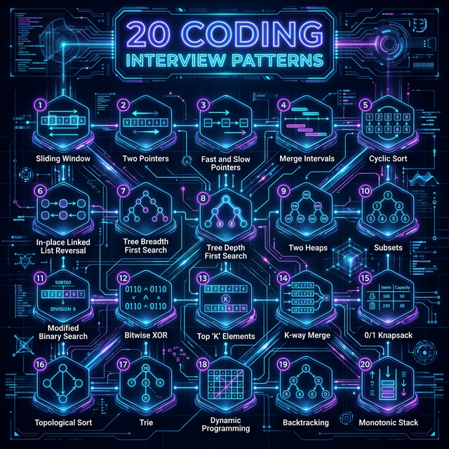
Overview of recurring interview patterns and their structural logic.
The Ultimate Interview Answer Template
When solving any coding question, strictly follow these 7 steps in order:
- Clarify problem: Ask questions, establish bounds, and define exact input/outputs.
- Identify pattern: Match clues from the problem to one of the 20 core patterns below.
- Explain brute force: State the naive approach (O(N²), O(2^N)) to establish a baseline.
- Optimize with pattern: Apply the pattern to remove redundant work and explain why it works.
- Write code: Implement the optimized solution cleanly and accurately.
- Analyze complexity: State the optimized Time and Space complexity upfront.
- Test edge cases: Dry-run with empty inputs, negatives, duplicates, or extreme limits.
Pattern Recognition Cheat Sheet
Pattern Recognition Flowchart
Time Complexity Cheatsheet
Sliding Window
This pattern is used to perform a specific operation on a specific window size of a given array or linked list. The power of this pattern lies in its ability to convert nested loops (O(N²)) into a single loop (O(N)).
🧠 Mental Model
Maintain a moving window of valid elements. The right pointer expands the window to explore new elements, while the left pointer shrinks it when the window becomes invalid.
- "Contiguous subarray or substring"
- "Maximum/Minimum sum of size K"
- "Longest/Shortest substring with K distinct characters"
Reasoning: Brute Force to Optimized
Check every possible contiguous subarray using nested loops.
Time: O(N²)
Consecutive subarrays overlap heavily. Re-calculating the sum/state for the overlapping part is redundant.
Maintain a sliding window. Add the new element entering the window and remove the old element leaving the window.
Time: O(N)
How it Works (Step-by-Step)
- Initialize two pointers (
leftandright) at the start of the data structure. - Expand the window by moving the
rightpointer and consuming elements. - Shrink the window by moving the
leftpointer if the window condition is violated (e.g., exceeds sum K). - Record the result (max length, sum, etc.) at each valid window state.

Common Edge Cases
- Empty Input: Ensure the window handles
len(arr) == 0. - Window Size K > Array Length: Handle base cases where
kis larger than the input. - Negative Numbers: Standard sliding window often assumes positive numbers; be careful if negative values are present.
If the array contains negative numbers and you are looking for a target sum. Negative numbers break the monotonic property of the window (expanding the window doesn't guarantee the sum will increase). Use Prefix Sum instead.
Example problem: Subarray Sum Equals K
The Universal Masterclass Template
def sliding_window(nums, k):
left = 0
best_result = 0 # or float('inf') for finding minimums
window_state = 0 # This could be a sum, a hash map of character counts, etc.
for right in range(len(nums)):
# 1. Add the element at 'right' to your window state
window_state += nums[right]
# 2. Check if the window is INVALID. If so, shrink from the left until it's valid again.
while window_is_invalid(window_state, k):
# Remove the element at 'left' from your window state
window_state -= nums[left]
left += 1 # Shrink the window
# 3. The window is now valid. Update your best result.
best_result = max(best_result, right - left + 1) # Example: tracking max length
return best_resultRelevant Blind 75 Problems
Walkthrough: Longest Substring Without Repeating
Input: 'abcabcbb' Step 1: window='a', max=1 Step 2: window='ab', max=2 Step 3: window='abc', max=3 Step 4: hit 'a', window becomes 'bca', max=3
⚠️ Common Interview Mistakes
- Forgetting to shrink the window completely when invalid.
- Updating the global maximum/minimum state at the wrong time (before vs after shrinking).
Two Pointers
Two Pointers is a pattern where two pointers iterate through the data structure in tandem until one or both of the pointers hit a certain condition. It typically reduces complexity from O(N²) to O(N) by leveraging the sorted property of the input.
- "Sorted array or linked list"
- "Find a pair/triplet that sum to X"
- "Compare strings while ignoring case/punctuation (Palindrome)"
Reasoning: Brute Force to Optimized
Check all possible pairs using two nested loops.
Time: O(N²)
Since the array is sorted, we can use the order to intelligently skip invalid pairs. If the sum of the smallest and largest is too large, no other number added to the largest will work.
Start pointers at both ends. Move the left pointer right to increase the sum, or the right pointer left to decrease the sum.
Time: O(N)
If the array is unsorted and you need to return original indices. Sorting the array
destroys the original indices. You would need to use a Hash Map
instead, or store tuples of (value, original_index) before sorting.
def two_pointers(arr, target):
# PRE-REQUISITE: The array MUST be sorted.
# If it's not, you must sort it first: arr.sort() -> O(N log N) time
left = 0
right = len(arr) - 1
while left < right: # STRICTLY less than.
current_sum = arr[left] + arr[right]
if current_sum == target:
return [left, right] # Found it!
elif current_sum < target:
# The sum is too small. Since the array is sorted,
# we need a bigger number. Move the left pointer right.
left += 1
else:
# The sum is too big. We need a smaller number.
# Move the right pointer left.
right -= 1
return [-1, -1] # Not foundRelevant Blind 75 Problems
Walkthrough: Two Sum II (Sorted)
Input: [2, 7, 11, 15], Target = 9 L=2, R=15 -> Sum 17 (Too big, shrink R) L=2, R=11 -> Sum 13 (Too big, shrink R) L=2, R=7 -> Sum 9 (Match found!)
⚠️ Common Interview Mistakes
- Not ensuring the array is strictly sorted first.
- Crossing boundaries (`left > right`) incorrectly causing out-of-bounds index errors.
Fast & Slow Pointers
Also known as the Hare & Tortoise algorithm, this approach uses two pointers which move through the array or linked list at different speeds. The fast pointer moves 2 steps while the slow pointer moves 1 step.
- "Linked List Loop or Cycle"
- "Find the middle of a linked list"
- "Happy Number" or cyclic dependencies
Reasoning: Brute Force to Optimized
Store every visited node in a Hash Set. If you see a node again, there is a cycle.
Time: O(N), Space: O(N)
We don't need to remember every node. We just need to know if we are going in circles.
Run two pointers at different speeds. If there is a cycle, the faster one will eventually "lap" the slower one and they will meet.
Time: O(N), Space: O(1)
The Logic of Cycles
If a cycle exists, the fast pointer will eventually "lap" the slow pointer and they will
meet. If
fast reaches the end (None), there is no cycle.
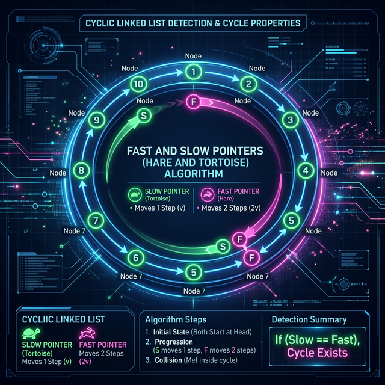
If you need to find the shortest path in a graph or tree. Fast & Slow pointers are strictly for detecting cycles or finding the middle traversing linear paths. For shortest paths, use BFS.
The Universal Masterclass Template (Cycle Detection)
def has_cycle(head):
slow = head
fast = head
# Fast moves 2 steps, so we must ensure fast and fast.next aren't None
while fast is not None and fast.next is not None:
slow = slow.next # Moves 1 step
fast = fast.next.next # Moves 2 steps
if slow == fast:
return True # They crashed into each other. It's a cycle!
return False # Fast reached the end of the list. No cycle.Edge Cases
- Single Node: Linked list with only one node (no cycle possible).
- Two Nodes with cycle:
node1 -> node2 -> node1. - Removing Cycle: To find the start of the cycle, reset
slowto head after meeting, then move both at speed 1 until they meet again.
Relevant Blind 75 Problems
Walkthrough: Linked List Middle
List: 1 -> 2 -> 3 -> 4 -> 5 Step 1: S=1, F=1 Step 2: S=2, F=3 Step 3: S=3, F=5 (F has nowhere to double-jump, S is the middle)
⚠️ Common Interview Mistakes
- Null pointer exceptions (checking `fast.next.next` when `fast.next` is null).
- Failing to reset one pointer to the head to find the cycle start exactly.
Merge Intervals
The Merge Intervals pattern is an efficient technique to deal with overlapping intervals. The crucial first step is always **sorting** the intervals by their start time.
- "Overlap" or "Intersection" of intervals
- "Scheduling events" or "Calendar slots"
Reasoning: Brute Force to Optimized
Compare every interval with every other interval to see if they overlap. If they do, merge them and start over.
Time: O(N²)
If the intervals are sorted by start time, overlapping intervals will always be adjacent to each other.
Sort the intervals, then iterate through them once, merging adjacent overlapping intervals.
Time: O(N log N)
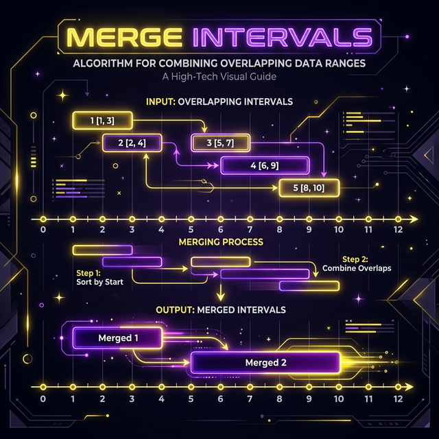
If intervals are constantly being added and removed dynamically. Re-sorting takes O(N log N) every time. Use a Segment Tree or a Balanced BST (like a TreeMap in Java/C++) instead.
The Universal Masterclass Template
def merge_intervals(intervals):
if len(intervals) < 2:
return intervals
# 1. CRITICAL: Sort intervals strictly by their start time
intervals.sort(key=lambda x: x[0])
merged = []
# 2. Put the first interval in our output list to start comparing
merged.append(intervals[0])
for i in range(1, len(intervals)):
current = intervals[i]
last_merged = merged[-1]
# 3. Check for overlap: Does current interval start BEFORE the last one ended?
if current[0] <= last_merged[1]:
# They overlap! Merge them by taking the MAX of their end times.
last_merged[1] = max(last_merged[1], current[1])
else:
# They don't overlap. It's a separate, distinct interval. Add to output.
merged.append(current)
return mergedRelevant Blind 75 Problems
Walkthrough: Merge Intervals
Input: [[1,3], [2,6], [8,10]] Sort: [[1,3], [2,6], [8,10]] Merge [1,3] & [2,6] -> overlap! New: [1, max(3,6)] -> [1,6] Next [8,10] -> no overlap. Final: [[1,6], [8,10]]
⚠️ Common Interview Mistakes
- Forgetting to sort the array first (Critical!).
- Only updating the end time instead of taking `max(current_end, next_end)`.
Cyclic Sort
This pattern describes an approach to sort an array containing numbers in a given range [1 to N]. By leveraging the indices of the array, we can sort it in O(N) time without extra memory.
- "Numbers in a range [1, N]"
- "Find the missing/duplicate number"
- "Find all disappeared numbers"
Reasoning: Brute Force to Optimized
Sort the array using standard sorting algorithms, then gently iterate to find the missing/duplicate number.
Time: O(N log N)
The numbers are strictly bounded in the range `1` to `N`. This implies that their value directly corresponds to their correct array index.
Iterate through the array and strictly swap each number to its "home" index
(nums[i] - 1). Then, pass through again to find the one out of
place.
Time: O(N)
How it Works (The Swap Logic)
Since we know the range is 1-N, element i should be at index
i-1. We
iterate and swap elements to their home index until the current element is correctly
placed.
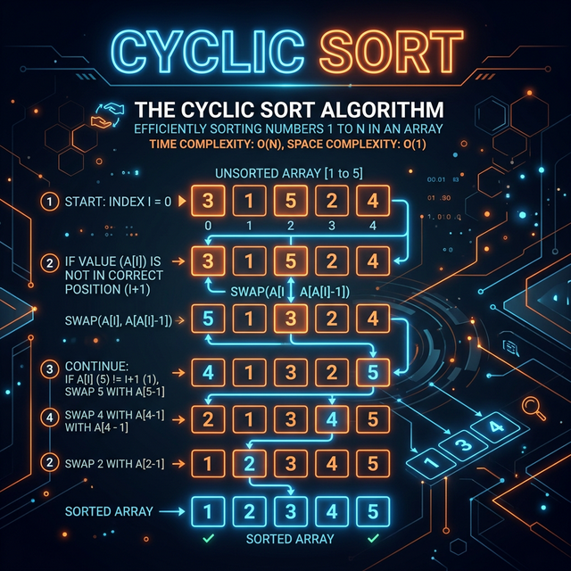
If the elements are not bounded in a tight sequential range. If elements are arbitrarily large numbers or negative numbers, indices don't match values. Use a Hash Set instead.
The Universal Masterclass Template
def cyclic_sort(nums):
i = 0
while i < len(nums):
# What seat SHOULD this number be sitting in?
# Example: if numbers are 1 to N, 'val' should be at index 'val - 1'
correct_index = nums[i] - 1
# Is the number currently NOT in its correct seat?
# (Ensure index is within bounds to avoid OutOfBounds errors)
if 0 <= correct_index < len(nums) and nums[i] != nums[correct_index]:
# Swap them! Send the number to its home index.
nums[i], nums[correct_index] = nums[correct_index], nums[i]
# DO NOT increment 'i' here. Check the NEW number we just swapped in.
else:
# The number is either in its correct seat or out-of-bounds. Move on.
i += 1
# Array is sorted (e.g., [1, 2, 3, 4, 5]). Loop again to find missing/duplicates.
return numsEdge Cases
- Duplicate Numbers: If
arr[i] == arr[arr[i]-1]and they aren't at their correct index, you've found a duplicate. - Zero-based vs One-based: Be extremely careful if the range is [0, N-1] vs [1, N].
Relevant Blind 75 Problems
Walkthrough: Missing Number
Input: [3, 0, 1] (Range 0 to 3, N=3) Index 0 starts with 3. 3 is out of bounds (N). Ignore or place at end. Swap 0 -> 0 belongs at index 0. [0, 3, 1] Missing index 2 has value 1 -> swap! Final: [0, 1, 3]. Missing is 2.
⚠️ Common Interview Mistakes
- Infinite loops caused by returning the number to the same wrong index.
- Out of bounds errors when the number is <= 0 or> N.
In-place Reversal of a Linked List
In-place reversal is a fundamental skill for linked list problems. It avoids O(N) space by reusing existing node pointers to reverse the list direction.
- "Reverse a linked list"
- "Reverse a sub-list" or "Every K-element group"
Reasoning: Brute Force to Optimized
Traverse the linked list and store all node values in an array. Reverse the array, then create a brand new linked list.
Time: O(N), Space: O(N)
We already have the nodes in memory. Instead of creating new ones, we just need to change the arrows (pointers) to point backwards.
Iterate through the list while maintaining three pointers (previous, current, next) to reverse the links in-place.
Time: O(N), Space: O(1)
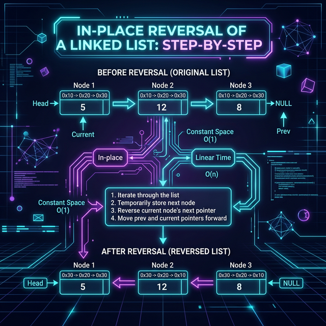
If you only need to print/return the values in reverse order but shouldn't mutate the original data structure. In that case, use a Stack or Recursion to traverse backward (O(N) space).
The Universal Masterclass Template (The 3-Pointer Dance)
def reverse_linked_list(head):
# 1. Initialize the 3 pointers
prev = None
curr = head
while curr is not None:
# 2. Save the rest of the list before breaking the link
next_node = curr.next
# 3. REVERSE the pointer to point backwards
curr.next = prev
# 4. Shift pointers forward for the next iteration
prev = curr
curr = next_node
# 'prev' is the new head of the reversed list (since 'curr' is now None)
return prevRelevant Blind 75 Problems
Walkthrough: Reverse List
List: 1 -> 2 -> 3 Start: prev=null, curr=1 Curr.next points to prev (null). prev moves to 1, curr moves to 2. Next: curr(2).next points to prev(1). prev moves to 2. Finished: prev=3 -> 2 -> 1
⚠️ Common Interview Mistakes
- Losing the rest of the list because you overwrote `current.next` before saving it.
- Returning `head` instead of `prev` as the new starting point.
Tree BFS (Breadth-First Search)
Breadth-First Search traverses a tree level-by-level using a **Queue**. It is the standard approach for finding the shortest path in an unweighted tree/graph.
- "Level order traversal"
- "Shortest path to a leaf"
- "Process nodes level-by-level"
Reasoning: Brute Force to Optimized
Use DFS with an explicit `level` parameter, and append nodes to an array of arrays based on their depth.
DFS naturally jumps between levels. To process strictly level-by-level, a First-In-First-Out (FIFO) structure is required so we process parents before their children.
Use a Queue. Enqueue the root, then iteratively process all nodes in the current queue strictly before enqueueing their children.
Time: O(N), Space: O(N)
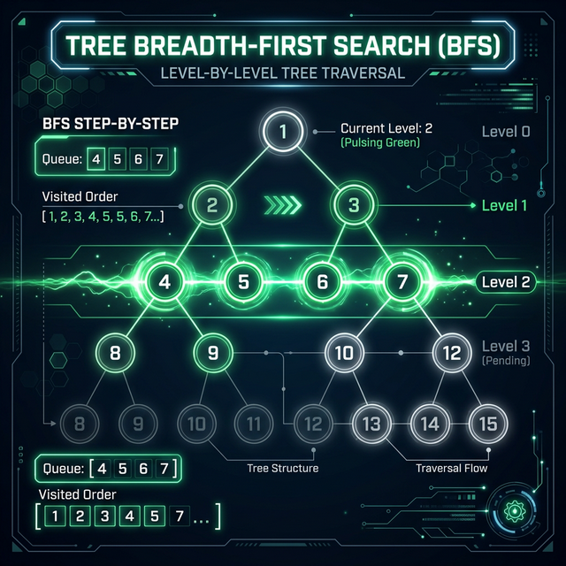
If the tree is extremely wide and you are memory-constrained. The Queue can hold up to `N/2` nodes at the bottom level. If you only need to reach a specific depth, try Iterative Deepening DFS instead.
The Universal Masterclass Template (Level Order)
from collections import deque
def bfs(root):
if not root:
return []
result = []
queue = deque([root])
while queue:
level_size = len(queue)
current_level = []
# Iterate through exactly the number of nodes in the CURRENT level
for _ in range(level_size):
node = queue.popleft()
current_level.append(node.val)
# Enqueue the NEXT level's children
if node.left:
queue.append(node.left)
if node.right:
queue.append(node.right)
result.append(current_level)
return resultRelevant Blind 75 Problems
Walkthrough: Tree Level Order
Tree: Root 1, Children 2 & 3 Q = [1] Pop 1. Add 2, 3. Level=[1]. Q=[2, 3] Pop 2, Pop 3. Add their children. Level=[2, 3].
⚠️ Common Interview Mistakes
- Forgetting to capture the current queue length before the inner for-loop, causing level-mixing.
- Enqueuing null children.
Tree DFS (Depth-First Search)
Depth-First Search goes deep into one branch before backtracking. It usually uses **Recursion** (implicitly using the call stack) or an explicit **Stack**.
- "Pre-order, In-order, Post-order traversal"
- "All paths from root to leaf"
- "Target sum along a path"
Reasoning: Brute Force to Optimized
Process every node and store paths in global variables, checking conditions retroactively.
Tree problems generally have optimal substructure. The solution for a parent node can usually be built directly from the solutions of its left and right children.
Use recursion. Define a base case (handling a null node) and combine the recursive results of `node.left` and `node.right`.
Time: O(N), Space: O(H)
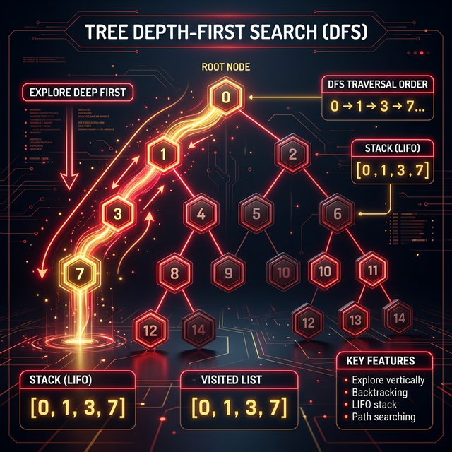
If the tree is extremely deep/unbalanced (e.g., essentially a long linked list). Standard recursive DFS will trigger a Stack Overflow. Use an iterative DFS with a manual Stack, or BFS instead.
The Universal Masterclass Template (Recursive)
def dfs(node):
# 1. Base Case: What happens when we hit the bottom?
if node is None:
return 0 # Or False, or [], depending on the problem
# 2. Pre-order logic (Process current node BEFORE children)
# e.g., print(node.val)
# 3. Recurse down the branches
left_result = dfs(node.left)
right_result = dfs(node.right)
# 4. Post-order logic (Process current node AFTER children return results)
# e.g., finding max depth: return 1 + max(left_result, right_result)
return left_result + right_result # Combine resultsRelevant Blind 75 Problems
Walkthrough: Root to Leaf Path Sum
Tree: 1 -> 2, sum=3 Start at 1: sum=3-1=2. Go left to 2. At 2: sum=2-2=0. It's a leaf and sum=0! Return True.
⚠️ Common Interview Mistakes
- Passing mutable reference types (lists/arrays) into the recursive function without making independent copies.
- Missing the base-case (`if not node: return`).
Two Heaps
Used in problems where we need to divide elements into two parts and extract the Min from one and Max from the other. Essential for dynamic median tracking.
- "Find the median of a stream"
- "Real-time processing of sorted statistics"
Reasoning: Brute Force to Optimized
Store numbers in an array. Every time a median is requested, sort the array and pick the middle element.
Time: O(N log N) per median
We don't need the entire array perfectly sorted. We only need the largest elements of the smaller half, and the smallest elements of the larger half.
Maintain two heaps (a Max-Heap for the small half, and a Min-Heap for the large half). Balance them so they differ in size by at most 1.
Time: O(log N) per insert, O(1) for median
Visual logic (Median Case)
Maintain a Max-Heap for the smaller half and a Min-Heap for the larger half. The median is either the root of the larger heap or the average of both roots.
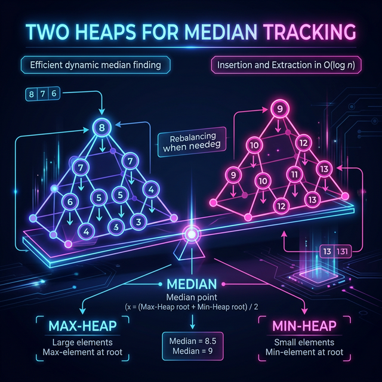
When you only need to process data in batches, or if you only need the median exactly once at the very end. In those cases, a single sort `O(N log N)` or Quickselect `O(N)` is more efficient and simpler to write.
The Universal Masterclass Template (Median Finding)
import heapq
class MedianFinder:
def __init__(self):
# max_heap stores the smaller half (Python heapq is Min-Heap by default, so we push -num)
self.max_heap = []
# min_heap stores the larger half
self.min_heap = []
def addNum(self, num):
# 1. Always push to max_heap first (the smaller half)
heapq.heappush(self.max_heap, -num)
# 2. Guarantee every element in min_heap is >= every element in max_heap
if self.max_heap and self.min_heap and (-self.max_heap[0] > self.min_heap[0]):
val = -heapq.heappop(self.max_heap)
heapq.heappush(self.min_heap, val)
# 3. Balance sizes: max_heap can have 1 more element than min_heap (for odd totals)
if len(self.max_heap) > len(self.min_heap) + 1:
val = -heapq.heappop(self.max_heap)
heapq.heappush(self.min_heap, val)
elif len(self.min_heap) > len(self.max_heap):
val = heapq.heappop(self.min_heap)
heapq.heappush(self.max_heap, -val)
def findMedian(self):
if len(self.max_heap) > len(self.min_heap):
# Odd number of elements, median is the top of the larger heap
return -self.max_heap[0]
# Even number, median is average of both tops
return (-self.max_heap[0] + self.min_heap[0]) / 2.0Relevant Blind 75 Problems
Walkthrough: Find Median
Insert 5: MaxHeap=[5], MinHeap=[] -> Median: 5 Insert 10: MaxHeap=[5], MinHeap=[10] -> Median: (5+10)/2 = 7.5 Insert 1: MaxHeap=[5, 1], MinHeap=[10] -> Median: 5
⚠️ Common Interview Mistakes
- Failing to rebalance the heaps when their size difference exceeds 1.
- Inserting into the wrong heap simply based on size instead of comparing against the tops of the heaps.
Subsets
Deals with Permutations and Combinations. The basic logic is that for every new element, we take all existing subsets and create new ones by adding the element to them.
- "Find all permutations/combinations"
- "Generate power set"
Reasoning: Brute Force to Optimized
Use deeply nested loops to generate combinations of varying sizes. This quickly becomes impossible to write dynamically for variable `N`.
Every new element added to our set exactly doubles the total number of subsets. The new subsets are simply the old subsets with the new element appended.
Start with an empty set `[[]]`. For each element, cascade it across all current subsets. (Alternatively, use backtracking to build a tree of inclusion/exclusion choices).
Time: O(N * 2^N)
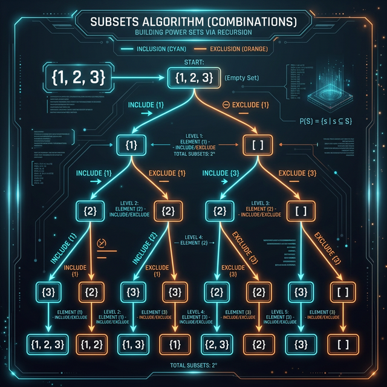
If the input size `N` is greater than 20. The time and space complexity is exponential (`O(2^N)` for subsets, `O(N!)` for permutations). If `N` is large, look for a Dynamic Programming or Greedy optimization instead.
The Universal Masterclass Template (Cascading)
def find_subsets(nums):
# Start with an empty subset
subsets = [[]]
for current_number in nums:
# We will take all existing subsets and insert the current number in them to create new subsets
n = len(subsets)
for i in range(n):
# Create a new subset from the existing subset and add the current element to it
# The list() copy is CRITICAL, otherwise you modify the original subset in-place
new_subset = list(subsets[i])
new_subset.append(current_number)
subsets.append(new_subset)
return subsetsEdge Cases
- Duplicate Input: If the input array has duplicates, sort it first
and skip
elements if
arr[i] == arr[i-1]. - Empty Set: The subset of
[]is[[]].
Relevant Blind 75 Problems
Walkthrough: Subsets
Input: [1, 2] Start: [] Add 1: [1] From [1] Add 2: [1, 2] Backtrack to []: Add 2: [2] Result: [], [1], [1, 2], [2]
⚠️ Common Interview Mistakes
- Appending the actual list reference to results, mutating it later (instead of appending a deep copy `path[:]`).
- Not sorting the array first when dealing with duplicates.
Modified Binary Search
Beyond simple search, this applies to rotated arrays, infinite streams, or finding boundaries (first/last occurrence).
- "Sorted array (or slightly rotated)"
- "Find O(log N) solution"
Reasoning: Brute Force to Optimized
Linearly scan the array from start to finish looking for the target.
Time: O(N)
The array is mostly sorted. Even if rotated, if we split it in half, at least one half is guaranteed to be perfectly sorted.
Find the midpoint. Check which half is perfectly sorted. If the target falls within that sorted range's boundaries, discard the other half. Otherwise, discard the sorted half.
Time: O(log N)
In a rotated array, at least one half ([left, mid] or
[mid, right]) is
always sorted. Check which half is sorted and determine if the target lies within it.
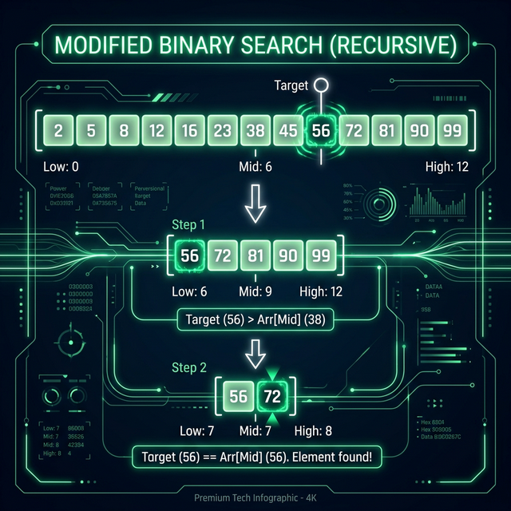
If the array contains many duplicates in a rotated state (e.g.,
[3, 3, 3, 1, 3]). You can no longer reliably determine which half is
sorted in O(1) time without moving pointers linearly, degrading
worst-case complexity to O(N).
The Universal Masterclass Template (Rotated Array)
def search_rotated_array(nums, target):
left, right = 0, len(nums) - 1
while left <= right: # Important: <= because left and right could point to the target
mid = (left + right) // 2
if nums[mid] == target:
return mid
# Determine which half is properly sorted
if nums[left] <= nums[mid]:
# The LEFT half is sorted
if nums[left] <= target < nums[mid]:
# The target is strictly inside the sorted left half
right = mid - 1
else:
# Target must be in the unsorted right half
left = mid + 1
else:
# The RIGHT half is sorted
if nums[mid] < target <= nums[right]:
# The target is strictly inside the sorted right half
left = mid + 1
else:
# Target must be in the unsorted left half
right = mid - 1
return -1Relevant Blind 75 Problems
Walkthrough: Rotated Array Search
Array: [4, 5, 6, 7, 0, 1, 2] Target: 0 Mid is 7. Left side [4..7] is sorted uniformly. 0 is not in it. Therefore search Right space! L=mid+1.
⚠️ Common Interview Mistakes
- Over-calculating mid (`(L+R)//2`) leading to integer overflow vs `L + (R-L)//2`.
- Off-by-one errors when setting `left = mid` vs `left = mid + 1`.
Top 'K' Elements
Best for finding the largest/smallest elements. Use a Min-Heap for Top K largest (size K) or a Max-Heap for Top K smallest.
- "Top K largest/smallest"
- "Kth most frequent"
Reasoning: Brute Force to Optimized
Sort the entire array in descending order and return the first K elements.
Time: O(N log N)
Sorting the entire array does too much work. We don't care about the relative
order of the remaining N - K elements.
Use a Heap of size K. For "Top K Largest", use a Min-Heap. The heap naturally keeps the K largest we've seen, with the smallest of those at the root ready to be evicted if we find a larger number.
Time: O(N log K)
Strategy
- Push elements into a heap of size K.
- If heap size > K, pop the smallest element.
- In the end, the heap contains the largest K elements.
If K is very close to N (e.g., you need the top 999,000
elements out of 1,000,000). A heap of size K takes O(K)
space and operations take O(N log K). At that point, a standard
O(N log N) sort is faster in practice.
The Universal Masterclass Template (Top K Largest)
import heapq
def find_k_largest_elements(nums, k):
# We use a Min-Heap to find the Top K LARGEST elements.
# Why? We keep the K largest we've seen so far in the heap.
# The SMALLEST of those K largest sits at the top.
# If we see a new number bigger than the top, we pop the top and push the new one.
min_heap = []
# 1. Put first 'K' numbers in the min heap
for i in range(k):
heapq.heappush(min_heap, nums[i])
# 2. Go through the remaining numbers of the array
for i in range(k, len(nums)):
# If number is larger than the smallest number in the heap...
if nums[i] > min_heap[0]:
# ...remove the smallest number and add the new larger number
heapq.heappop(min_heap)
heapq.heappush(min_heap, nums[i])
# The heap now contains the top K largest numbers
return list(min_heap)Relevant Blind 75 Problems
Walkthrough: Top 2 Largest
Input: [3, 1, 5, 12, 2, 11], K=2 Heap up to K: [1, 3] See 5 (5>1): Pop 1, Push 5. Heap: [3, 5] See 12 (12>3): Pop 3, Push 12. Heap: [5, 12] Final top 2: 5 and 12.
⚠️ Common Interview Mistakes
- Using a Max-Heap instead of a Min-Heap for Top K Largest elements (a common counter-intuitive blunder).
- Pushing elements before checking the heap's size.
K-way Merge
Merge K sorted lists efficiently using a Min-Heap. Extremely common in distributed systems for merging sorted logs or data shards.
- "Merge sorted lists/arrays"
- "Find Kth smallest in multiple sorted lists"
Reasoning: Brute Force to Optimized
Dump all elements from all K lists into a single giant array. Sort
the array.
Time: O(N log N)
The individual lists are already sorted! We only need to compare the current
fronts of each of the K lists to find the absolute minimum.
Maintain a Min-Heap of size K, containing the current front element
of each list. Pop the global minimum, and push the next element from that
specific list into the heap.
Time: O(N log K)
If the lists are not already sorted, or if you are merging exactly 2 lists. If it's
just 2 lists, the Two Pointers pattern (O(N) time,
O(1) space) is far simpler and strictly better.
The Universal Masterclass Template
import heapq
def merge_k_lists(lists):
min_heap = []
# 1. Put the root (first element) of each of the K lists into the min-heap.
# We push a tuple: (value, list_index, element_index_within_list)
for i in range(len(lists)):
if lists[i]: # Ensure list is not empty
heapq.heappush(min_heap, (lists[i][0], i, 0))
result = []
# 2. Take the smallest element from the heap, add it to result.
while min_heap:
val, list_index, element_index = heapq.heappop(min_heap)
result.append(val)
# 3. If the list we just pulled from has more elements,
# push its next element into the heap.
next_element_index = element_index + 1
if next_element_index < len(lists[list_index]):
next_val = lists[list_index][next_element_index]
heapq.heappush(min_heap, (next_val, list_index, next_element_index))
return resultRelevant Blind 75 Problems
Walkthrough: Merge 3 Sorted Arrays
A1=[1, 4], A2=[2, 5], A3=[3, 6] Heap inserts firsts: [1, 2, 3] Pop 1 (from A1). Insert next from A1 (which is 4). Heap: [2, 3, 4] Pop 2 (from A2). Insert next from A2 (5)...
⚠️ Common Interview Mistakes
- Not storing a reference to the array/list index inside the heap node so you don't know where to pull the next item from.
- Extracting from exhausted lists.
Topological Sort
Used for linear ordering of elements with dependencies. Primarily uses Kahn's Algorithm (BFS with in-degree) or DFS.
- "Prerequisites" or "Order of tasks"
- "Directed Acyclic Graph (DAG)"
Reasoning: Brute Force to Optimized
Randomly pick tasks, check if all their prerequisites are met (which requires scanning all edges), and execute if so. Repeat until done.
Tasks with 0 prerequisites can be executed immediately. When they finish, they free up the requirements for their dependent tasks.
Count the "in-degree" (prerequisites) of every node. Add nodes with 0 in-degree to a Queue. Process the Queue, reducing the in-degree of neighbors. If a neighbor reaches 0, add it to the Queue.
Time: O(V + E)
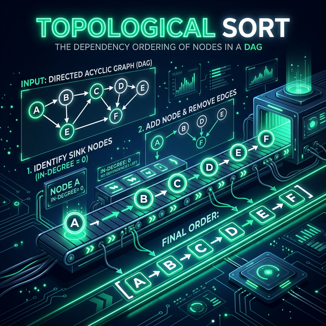
If the graph contains cycles. Topological sorting is only defined for Directed Acyclic Graphs (DAGs). If a cycle exists, Kahn's algorithm will naturally terminate early (not processing all nodes), which actually makes it perfect for detecting cycles, but it can't produce a valid global ordering.
The Universal Masterclass Template (Kahn's Algorithm - BFS)
from collections import deque
def topological_sort(vertices, edges):
sorted_order = []
if vertices <= 0:
return sorted_order
# 1. Initialize the graph visually
# in_degree keeps track of how many prerequisite arrows point TO a node
in_degree = {i: 0 for i in range(vertices)}
# graph is an adjacency list. Key=Node, Value=List of neighbors it points to
graph = {i: [] for i in range(vertices)}
# 2. Build the graph visually
for edge in edges:
parent, child = edge[0], edge[1]
graph[parent].append(child) # Add the arrow
in_degree[child] += 1 # The child has one more prerequisite
# 3. Find all sources: nodes with ZERO prerequisites
sources = deque()
for key in in_degree:
if in_degree[key] == 0:
sources.append(key)
# 4. For each source, execute it and remove its arrows from the graph
while sources:
vertex = sources.popleft()
sorted_order.append(vertex)
# When we finish a task, all its neighbors have 1 less prerequisite
for child in graph[vertex]:
in_degree[child] -= 1
# If the neighbor now has 0 prerequisites, it becomes a source!
if in_degree[child] == 0:
sources.append(child)
# Topological sort is not possible if the graph has a cycle
if len(sorted_order) != vertices:
return []
return sorted_orderRelevant Blind 75 Problems
Walkthrough: Course Schedule
Need A to take B. B to take C. Indegrees: A:0, B:1, C:1 Queue gets [A]. Pop A. A allows B. B indegree goes to 0! Add B to Queue. Pop B. C indegree goes to 0... Sort: A, B, C.
⚠️ Common Interview Mistakes
- Failing to check if the final sorted array length matches the total number of vertices (to detect cycles!).
- Mixing up directed edge direction `A->B` vs `B->A`.
Prefix Sum

The Core Idea: Precompute cumulative sums of an array so that the sum of any contiguous subarray can be queried in O(1) time instead of O(N).
Used for answering multiple range sum queries efficiently. Instead of re-calculating the sum of a subarray iteratively, we precompute a cumulative sum array.
- "Sum of subarray or range [i, j]"
- "Find the number of subarrays that sum to K" (often combined with a Hash Map)
Reasoning: Brute Force to Optimized
Whenever asked for the sum between index i and j, use a
loop to add the elements.
Time: O(N) per query
The sum from i to j is simply the sum from
0 to j MINUS the sum from 0 to
i-1. If we know the sum from the start to every index, we can find
any sub-range sum immediately.
Create a prefix array where prefix[x] is the sum of
elements up to x. For continuous queries, use
prefix[j] - prefix[i-1].
Time: O(1) per query
If the array values are constantly being updated dynamically between queries.
Updating a single element requires updating O(N) prefix sums. Use a
Segment Tree or Binary Indexed Tree (Fenwick Tree)
instead.
The Universal Masterclass Template
class PrefixSum:
def __init__(self, nums):
# We make the prefix array 1 element larger to handle edge cases easily
# prefix[i] will store the sum of all elements before index i
self.prefix = [0] * (len(nums) + 1)
for i in range(len(nums)):
self.prefix[i + 1] = self.prefix[i] + nums[i]
def sumRange(self, left, right):
# The sum from index 'left' to 'right' inclusive
# is the total sum up to 'right + 1' minus the total sum BEFORE 'left'
return self.prefix[right + 1] - self.prefix[left]Relevant Blind 75 Problems
Walkthrough: Range Sum
Input: [2, 4, 6, 8] Prefix arrays: [0, 2, 6, 12, 20] Sum from index 1 to 2 (4+6 = 10) Prefix calculation: Prefix[3] - Prefix[1] = 12 - 2 = 10.
⚠️ Common Interview Mistakes
- Forgetting to initialize the Prefix array with a default initial value of 0 to handle sums starting from the 0th index.
- Using a nested loop when a Hash Map tracking previous prefix sums is required.
Monotonic Stack
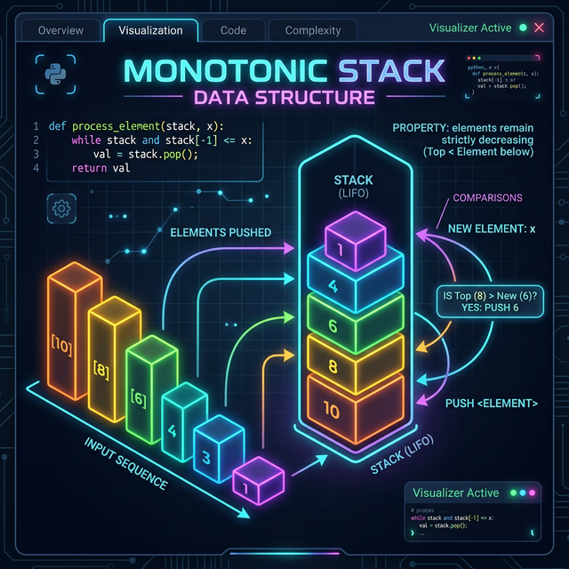
The Core Idea: Use a stack to maintain a sequence of elements in strictly increasing or decreasing order. This is perfect for "Next Greater Element" problems.
A stack whose elements are strictly increasing or strictly decreasing. It's the ultimate weapon for finding the "Next Greater Element" or "Next Smaller Element" in an array.
- "Next greater/smaller element"
- "Daily Temperatures" or Stock Spans
- "Largest Rectangle in Histogram"
Reasoning: Brute Force to Optimized
For each element, iterate through the remainder of the array looking for the first element that is larger/smaller.
Time: O(N²)
Instead of looking forward, we can keep a history of elements we've seen that are still "waiting" to find their next greater element. When we find a large element, it resolves the wait for all smaller elements seen recently.
Push indices onto a stack. When you encounter a new element larger than the element at the top of the stack, pop the stack and record the result.
Time: O(N)
If you only need the absolute max/min element in a sliding window. A Monotonic Stack is for "Next" greater/smaller, whereas a sliding window max/min requires a Monotonic Queue (Deque).
The Universal Masterclass Template (Next Greater Element)
def next_greater_elements(nums):
# Initializes result array with -1 (meaning "not found")
result = [-1] * len(nums)
stack = [] # We will store INDICES in the stack, not the values themselves
for i in range(len(nums)):
# While stack is not empty and current element is GREATER than
# the element at the index sitting on top of the stack
while stack and nums[i] > nums[stack[-1]]:
# We found the "Next Greater Element" for the index at stack-top!
popped_index = stack.pop()
result[popped_index] = nums[i]
# Push current index onto the stack to wait for its own next greater element
stack.append(i)
return resultRelevant Blind 75 Problems
Walkthrough: Next Greater Element
Input: [2, 1, 5] Stack=[], Push 2. See 1. 1 < 2, monotonic order kept. Push 1. Stack=[2, 1] See 5. 5 > 1! Break! Pop 1 (Next greater for 1 is 5). 5 > 2! Break! Pop 2 (Next greater for 2 is 5). Push 5. Stack=[5].
⚠️ Common Interview Mistakes
- Storing values instead of indices in the stack, making it impossible to calculate the positional distance (like in Daily Temperatures).
- Popping the wrong direction (>< vs <).
Union Find (Disjoint Set)
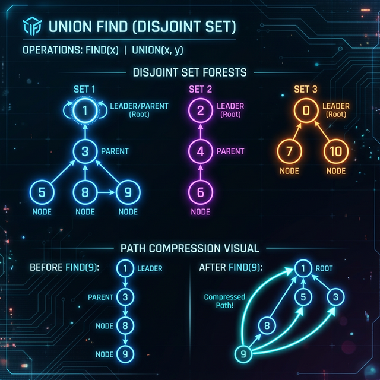
The Core Idea: Efficiently track a set of elements partitioned into a number of disjoint (non-overlapping) subsets. Near constant time O(α(N)) for finding components and merging them.
A data structure that tracks a set of elements partitioned into multiple disjoint (non-overlapping) subsets. Perfect for grouping things or detecting cycles in an undirected graph.
- "Number of Connected Components"
- "Are these two nodes in the same group/network?"
- "Valid Tree" (detecting cycles in undirected graphs)
Reasoning: Brute Force to Optimized
Run DFS/BFS every single time you need to check if node A can reach node B.
Instead of traversing edges repeatedly, we can assign a single "Leader" or "Parent" to each component. Two nodes are connected if they share the same Leader.
Maintain a parent array. Use Path Compression (make nodes point
directly to the ultimate leader) and Union by Rank (attach smaller trees under
larger ones) for near-instant O(1) performance.
If you need to remove edges from the graph. Standard Union-Find does not support an "un-union" operation. You would have to rebuild the entire graph. If edges are being removed, process the edge removals in reverse (adding them back) to stick with Union Find.
The Universal Masterclass Template
class UnionFind:
def __init__(self, size):
# Initially, each node is its own parent (its own leader)
self.parent = [i for i in range(size)]
# Rank keeps track of tree depth to keep things balanced
self.rank = [1] * size
self.components = size
def find(self, x):
# 1. Base case: If node is its own parent, we found the leader!
if self.parent[x] == x:
return x
# 2. PATH COMPRESSION: Make the node point directly to the ultimate leader
self.parent[x] = self.find(self.parent[x])
return self.parent[x]
def union(self, x, y):
root_x = self.find(x)
root_y = self.find(y)
if root_x != root_y:
# 3. UNION BY RANK: Attach the shorter tree under the taller tree
if self.rank[root_x] > self.rank[root_y]:
self.parent[root_y] = root_x
elif self.rank[root_x] < self.rank[root_y]:
self.parent[root_x] = root_y
else:
self.parent[root_y] = root_x
self.rank[root_x] += 1
self.components -= 1
return True # Successfully joined two different sets
return False # They were already in the same set! (Cycle detected)Relevant Blind 75 Problems
Walkthrough: Connected Components
Edges: A-B, C-D. Sets: [A,B], [C,D] New Edge B-C introduced. Find root of B (is A). Find root of C (is C). Union them: Make C point to A. Now [A, B, C, D] is one giant set.
⚠️ Common Interview Mistakes
- Not implementing Path Compression or Union By Rank, causing the tree to degenerate to O(N) linear time lookups.
- Initializing the parents array to incorrect generic zeros instead of `parent[i] = i`.
Dynamic Programming
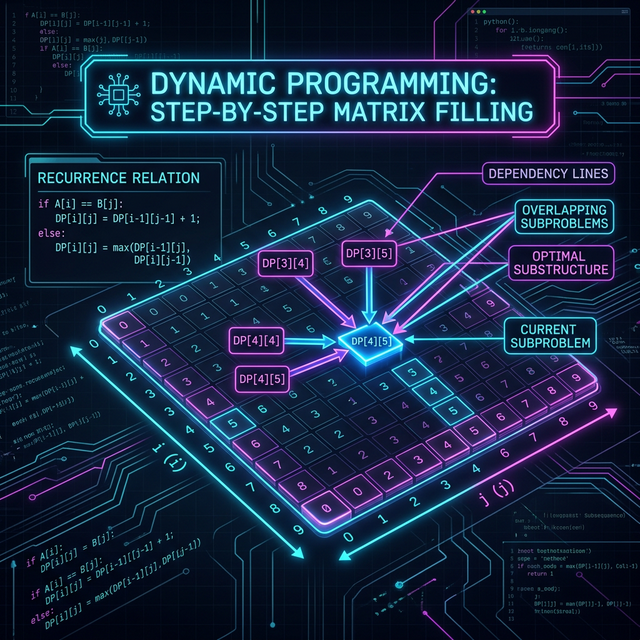
The Core Idea: Solve complex problems by breaking them down into simpler subproblems. If subproblems overlap, solve each once and store the result (memoization or tabulation).
An optimization technique that solves complex problems by breaking them down into simpler overlapping subproblems, solving each only once, and storing the results.
- "Find the Maximum/Minimum" things (e.g., coins, profit)
- "Number of ways" to reach a state
- "Is it possible" to reach a state
Reasoning: Brute Force to Optimized
Use simple recursion to branch out and try every single possible combination/path, doing massive amounts of redundant work.
Many branches of the recursion tree ask exactly the same question (Overlapping
Subproblems). For example, fib(5) calculates fib(3)
multiple times.
Save the answers to subproblems in a Hash Map (Top-Down Memoization) or an Array (Bottom-Up Tabulation) to solve each state strictly once.
If the problem requires ALL combinations, not just the count or maximum (e.g., "return all valid paths"). For returning the actual lists of elements, use Backtracking.
The Universal Masterclass Template (1D Tabulation)
def solve_dp_1D(n, cost):
# Base Cases
if n == 0: return 0
if n == 1: return cost[0]
# 1. Initialize DP array
dp = [0] * n
# 2. Seed base cases into the array
dp[0] = cost[0]
dp[1] = cost[1]
# 3. Iterate and build solutions from bottom up
for i in range(2, n):
# State Transition Equation: How do previous states build the current state?
dp[i] = cost[i] + min(dp[i-1], dp[i-2])
return min(dp[-1], dp[-2])Relevant Blind 75 Problems
Walkthrough: Fibonacci
Fib(4) = Fib(3) + Fib(2) Fib(3) = Fib(2) + Fib(1) Notice Fib(2) is calculated twice? Cache it the first time! DP[2] = 1. The second time, just return DP[2] instantly.
⚠️ Common Interview Mistakes
- Attempting a bottom-up 2D Matrix DP before properly writing out the Top-Down recursive transition equation.
- Off-by-one errors when sizing the `dp` array.
Greedy Algorithm
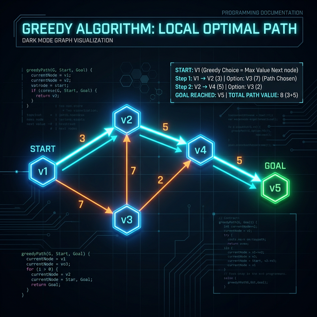
The Core Idea: Make the locally optimal choice at each stage with the hope of finding a global optimum. Often involves sorting the input first.
An algorithmic paradigm that builds up a solution piece by piece, always choosing the next piece that offers the most obvious and immediate benefit (local optimum) in the hopes it leads to a global optimum.
- "Minimum/Maximum" where choices are irreversible
- "Can you reach the end?" (Jump Game)
- Interval scheduling where sorting solves the problem
Reasoning: Brute Force to Optimized
Try every combination using DP or Backtracking, exploring paths even if they look unprofitable early on.
Some problems have the "Greedy Choice Property". Making the best local choice right now definitively NEVER harms the global maximum.
Sort the data. Iterate through it, taking the best immediate option at every step without ever looking back or second-guessing.
If taking the locally optimal choice could trap you from reaching a better global state down the line (e.g., fractional knapsack works with Greedy, but 0/1 Knapsack fails with Greedy and requires DP).
Relevant Blind 75 Problems
Walkthrough: Jump Game
Array: [2, 3, 1, 1, 4] Greedy strategy: Track furthest absolute index we can reach. At idx 0 (val 2), furthest is max(0, 0+2) = 2. At idx 1 (val 3), furthest is max(2, 1+3) = 4. Since furthest >= last index, return True.
⚠️ Common Interview Mistakes
- Applying Greedy to problems that actually require DP (like the standard Coin Change problem with non-standard denominations).
- Forgetting to sort the input array before executing the greedy pass.
Bit Manipulation

The Core Idea: Use bitwise operators (AND, OR, XOR, shifts) to perform operations extremely efficiently at the hardware level.
Operating directly on the binary representations of numbers. Essential for hyper-optimized state management, counting, or unique math tricks.
- "Number of 1 Bits" (Hamming Weight)
- "Find the number that appears once"
- "Missing Number" (using XOR)
Reasoning for Key Tricks
If you have pairs of matching numbers and one unique number, XORing every element
against a running total will cancel out all matches to 0. The final
total is your unique number.
The operation n = n & (n - 1) drops the least significant
1 bit in the binary representation of n. Calling this
repetitively counts exactly how many 1s there are.
x << 1 multiplies by 2. x >> 1
floor-divides by 2. This is extremely fast.
If you don't actually need ultimate performance optimizations and simple math or sets make the code far more readable. Usually, only use bits if the problem specifically demands O(1) space or bits manipulation logic.
The Universal Masterclass Template (XOR Unique)
def singleNumber(nums):
result = 0
for num in nums:
# XORing a number with itself results in 0.
# XORing with 0 results in the number.
# So all pairs cancel out, leaving only the unique element.
result ^= num
return resultRelevant Blind 75 Problems
Common Edge Cases Checklist
Before you confidently declare your code "done" in an interview, manually run your solution against this checklist:
Arrays & Strings
Emptyinput (e.g.,[]or"")Nullinput (if applicable in your language)- Single element (e.g.,
[1]or"a") - All duplicates (e.g.,
[2, 2, 2, 2]) - Already sorted / Reverse sorted
Trees & Graphs
- Root is
Null - Tree is actually a Linked List (skewed left/right)
- Graph has cycles (for DAG algorithms)
- Disconnected components in a graph
Math & Numbers
- Zero (0)
- Negative numbers
- Integer Overflow (e.g., usually > 2^31 - 1)
- Division by zero
Blind 75 Pattern Rosetta Stone
Bridge the gap between these 20 patterns and real-world FAANG interview questions. Here is how the most famous Blind 75 & Grind 75 problems map directly to the patterns above.
| LeetCode Problem | Required Pattern | Time Complexity |
|---|---|---|
| Two Sum / 3Sum | Two Pointers (or Hash Map) | O(N) / O(N²) |
| Longest Substring Without Repeating | Sliding Window | O(N) |
| Merge Intervals | Merge Intervals | O(N log N) |
| Linked List Cycle | Fast & Slow Pointers | O(N) |
| Reverse Linked List | In-place Reversal | O(N) |
| Search in Rotated Sorted Array | Modified Binary Search | O(log N) |
| Maximum Subarray | Dynamic Programming (Kadane's) | O(N) |
| Coin Change | Dynamic Programming | O(S * N) |
| Number of Islands | Tree DFS / BFS (or Union Find) | O(V + E) |
| Course Schedule | Topological Sort | O(V + E) |
| Top K Frequent Elements | Top 'K' Elements (Heap) | O(N log K) |
| Find Median from Data Stream | Two Heaps | O(log N) |
| Subsets / Permutations | Subsets (Backtracking) | O(N * 2^N) |
| Merge K Sorted Lists | K-way Merge (Heap) | O(N log K) |
| Daily Temperatures | Monotonic Stack | O(N) |
| Longest Consecutive Sequence | Union Find (or Hash Set) | O(N) |
| Missing Number | Cyclic Sort (or Math) | O(N) |
| Subarray Sum Equals K | Prefix Sum + Hash Map | O(N) |
| Jump Game | Greedy Algorithm | O(N) |
| Number of 1 Bits | Bit Manipulation | O(1) |
Final Pattern Summary Matrix
| Pattern | Recognize By | Data Structure | Time Complexity | Space Complexity |
|---|---|---|---|---|
| 1. Sliding Window | Contiguous subarray/substring | Array / String | O(N) | O(1) to O(K) |
| 2. Two Pointers | Sorted array pairs / Palindromes | Array / String / Linked List | O(N) | O(1) |
| 3. Fast & Slow Pointers | Linked list cycle / Middle node | Linked List / Array | O(N) | O(1) |
| 4. Merge Intervals | Overlapping intervals | Array | O(N log N) | O(N) |
| 5. Cyclic Sort | Numbers in range [1, N] | Array (1 to N) | O(N) | O(1) |
| 6. In-place Reversal | Reverse linked list nodes | Linked List | O(N) | O(1) |
| 7. Tree BFS | Level-by-level traversal | Tree / Graph | O(N) / O(V+E) | O(W) (Width) |
| 8. Tree DFS | Tree paths / Lowest common ancestor | Tree / Graph | O(N) / O(V+E) | O(H) (Depth) |
| 9. Two Heaps | Median / Stream of numbers | Array | O(N log N) | O(N) |
| 10. Subsets / Backtracking | Permutations / Combinations | Array | O(N * 2^N) | O(2^N) |
| 11. Modified Binary Search | Sorted array / Rotated sorted array | Sorted Array | O(log N) | O(1) |
| 12. Top 'K' Elements | Top K largest / smallest / frequent | Array / Heap | O(N log K) | O(K) |
| 13. K-way Merge | Merge K sorted lists / arrays | Arrays / Heap | O(N log K) | O(K) |
| 14. Topological Sort | Graph dependencies / Scheduling | Graph (DAG) | O(V+E) | O(V+E) |
| 15. Prefix Sum | Range sums / Sub-array sum queries | Array | O(N) | O(N) |
| 16. Monotonic Stack | Next greater / smaller element | Array / Stack | O(N) | O(N) |
| 17. Union Find | Connected components / Disjoint sets | Graph / Sets | O(α(N)) | O(N) |
| 18. Dynamic Programming | Overlapping subproblems / Max-Min | Array / Matrix | O(States) | O(States) |
| 19. Greedy Algorithm | Local optimums / Sorting first | Array | O(N log N) | O(1) |
| 20. Bit Manipulation | XOR / Bit-masking / O(1) space tricks | Integer | O(1) | O(1) |
During the first 5 minutes of an interview, try to match the problem to one of these 20 patterns. Once the pattern is identified, the algorithm steps usually follow a predictable template.